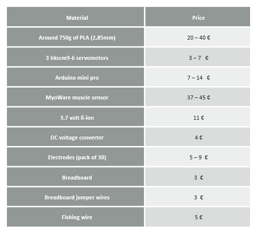

The final project was done by me and my partner Irene Raven. At the beggining our idea was to improve an orthosis that a little girl was carrying, but at the end we ended developing an afordable myoelectric prostetic.
Abstract.
During this course, we were asked to develop an idea for assisting people with necessities. After thinking about different projects, we realized that we would focus on people with a missing forearm, since we believe that even though they adapt to the routine very efficiently, an extra help could be useful. Even if the field of affordable prosthetics is growing, the one of myoelectric prosthetics is still stuck, with our project, we aimed to prove that an affordable myoelectric prosthetic is feasible. Since the loss of a limb can happen at every age and once a prototype exists is relatively easy to adapt it to different sizes, the target audience of our project varies from infants to elders. In order to develop the prototype, we used several techniques during the course. First, we did 3D-modelling, then we printed the models in the 3D-printing machines, afterwards we had to start doing the programming of the sensors and motors using Arduino, and finally, we did the different circuitry and soldering that was needed. If we had had a specific patient, we should have implemented scanning and 3D-sculpting. The results were not satisfactory since currently the prototype is not functional. First problems appeared when designing, since we hadn’t developed enough skills for making a human-like prosthetic; problems with the 3D-printing also appeared since small but important details were lost and additionally, the reading of the muscle signals was never precise enough for making the prosthetic work in a real patient.
Thinking on the project.
Development of the idea:
Before meeting with the people who helped us thorugh the project, we started to watch different projects done by doctorate, master and bachelor students about myoelectric protetics. Afterward, Adriana told us about Lars Thalmann, who was the person that gave us the key features to complete our task. Down below you can see a picture of the first draft of our hand.
The goal that we wanted to achieve with our prostetic was that once the sensor analyzed the muscle contract, the servomotors would be activated in such a way that when the muscle contracted since the patient wanted to grab something, the servomotrs would rotate 180° tensioning the wires and making the hand close. Once the muscle was be relaxed, the opposite would happen, the servomotors would turn in the other direction and the hand should open since the wires were no longer tense.
Developing project.
Desingning our own hand:
Firstly we are going to show some images of our hand’s design: the palm, the three different phalanges (distal phalanx, medial phalanx, proximal phalanx), link shafts, the wrist and the final result after combining everything. In the first two pictures the palm and the proximal phalanx can be seen.
Even though we worked really hard on Autodesk Fusion 360, our dessigining skills are not as developed as we wish, and as you can see in the pictures downbelow, the hand is not very human-like. Additionally, this hand wasn’t able to grip things and we did not think properly on the mechanis, that will be used for closing it when it was designed.
Using a more suitable hand:
In the meeting we had with Lars, he showed us the different hand desings that he had. Since we had not been really successful with the design and it was not sophisticated enough to perform the different activities that a hand do, we asked him if he could give us one of his hand designs. He agreed and he sent us a link from which he had picked some of the designs.To start with, we design the myoelectric hand we wanted to develop. For doing this, it is remarkable that we use some pieces from e-NABLE Phoenix Hand v2 by Jason Bryant (href = "https://www.thingiverse.com/thing:1453190?fbclid=IwAR3uYC4fmc6STT2i5pPD_y9sUMnILAIcmT5yRUYVP6cNqeOnmREuv3mS2tI"). Once again, we are very grateful to Lars since he was who provided us the source. Moreover, we used FUSION 360 to design the wrist and the forearm.
Desisgning the forearm and wrist:
Now, we will show you some images of how the design of the forearm and the wrist was made. Firstly, we draw two sketches, more specifically two circles, that joint using within “Create” the tool “JOIN”. The bottom circle has a radius of 55.00mm and the one in the top has a radius of 25.00mm, trying to simulate the measurements of a real arm.
Then, we created a hole, with a radius of 7.50mm, were the wrist would be placed. Once this step was done, the wrist was inserted using the tool “Insert Derive” within “Insert”.
Later this wrist was modified, as it can be seen afterwards. It is noteworthy that the wrist is no because we just wanted to focus in the mobility of the hand to grip things. The next step was to apply the tool “Chamfer” in the top of the arm, to make the design more stylish.
Subsequently, a hole was made in the bottom area (with a radius of 31.50mm), to open the forearm which is required to introduce the electronic devices. Then, a sketch was drawn in the top of the forearm, to be able to make all the holes required.
After it, another sketch was drawn. This time, a rectangle 140mmx65.00mm, which was extruded to divided the forearm in two different parts.For the next step, an offset plan was needed, to be able to draw a sketch of a semicircle which was extrude 5.00mm.
The following step was to delate one face to improve the design, so in the hollow of the top, the micro Arduino, the battery and the breadboard were thought to be located there.
Some other sketches were also drawn with the same target, to extrude them to design the inside of the arm, in this case to place the three servomotors.
We had to measure all these devices to design the interior. This is the main reason why we draw the 3 servos with its wheals. These wheals were thought to amplify the angle of the turn of the Servos, to be able to tense more the wires. (These wires are fishing wires. This was also an advice of Lars, who usually use those in his prosthesis).
Printing the different pieces:
After finishing with the design, we printed all the pieces from our designs and the ones from e-NABLE Phoenix Hand v2 by Jason Bryant. For doing this we use the software CURA. This step was difficult, since most of the pieces had a lot of small details. This is the reason why we had a lot of problems printing, and we needed to realize this lot of times, delaying our project for more than five days.
It is noteworthy to say that we used PLA material in all our design. PLA is Polylactid acid, which is a bio plastic so it was the best option for developing our hand. We also needed elastic bands, to make the fingers return to its original position, but we didn´t get them due to we couldn´t find properly ones in the FabLab and we couldn´t buy them as we did with the fishing wires.
Assembling the prostetic.
After having printed all the different parts of the hand, we were able to assemble the hand. Down below there will be a link of the printed pieces, and one of the assembled hand.
Programming and circuitry.
Programming:
Before starting to work with the different components that we must use to develop our project, we needed to check if they were working properly.
- To check if the servos were working properly, we into the different examples Arduino provides and after connecting the servo to an Arduino One board we run the sweep one into the Arduino.
Afterwards, we had to do one of the most crucial parts of the project, measure the different myoelectric activity with the Myoware sensor.
To do that we used the the AnalogReadSerial basic example, and after connecting the MyoWare sensor to the board we were able to read the different potentials in the part of the forearm we wanted.
We determined that the change that occurred when contracting and relaxing the muscle was that in the relaxed state the sensor read for almost 500 , and contracted the values dropped to almost 0 .
Once we had all the different values, we started to make the programming.
Servo motors function by receiving signals with different dutty cycles every 20 seconds (or 50 hz). Since they only work with analog inputs, because they are not direct current motors, we had to look for the PORTS in the Arduino Mini Pro which offer Pulse Width Modulation , technique used for transforming Direct signal into Analog signal inside the arduino. We chose the 3 first Analog pins of the Arduino Mini Pro: 3,5,6 .
With the attach function we were able tochoose the pins in the Arduino Mini Pro from which the output signal will be sent to the servos.
Once we had selected the different pins from which the signal will be sent to the different motors, we had to write the code for the Myoware sensor.
By writing analogRead(0) , we were establishing that we will be reading analog information from a sensor set in PIN 0. The information read by this sensor will be crucial to determine if the hand finger contract or relax.
The last of the programming was being able to set the exact position we wanted the servo to move in order to contract the hand. After making some calculations we come to the conclusion that setting the rotation angle to 180 degrees was the best option for grabbing things with enough strength. Write function was the function used to tell the servo to which position it should move.
Below, you can find a picture of the program attached.
Circuitry:
Before starting to make the circuit, we had to find out which was going to be the best way to make a light prosthetic. Since we could not change the weight of any of the components we were already using, we had to try to add the less possible amount of weight with the battery.
Considering that the MyoWare myosensor worked under 5V, and the servo motors could work with 6V, our only feasible choice was to create a parallel circuit between the different elements.
The central piece of the circuit is the Arduino Mini Pro, but before talking about it and the different components, lets talk about the power source.
Since our project was intended to be as realistic as possible, we thought that using a rechargeable battery will be the best option. Since there were not others available in the FabLab, we had to use a 3,7V lithium-ion rechargeable battery.
As we said before, we need at least 5V to supply to power up all the different components, and we were using a 3,7V battery, so in order to have enough voltage, we used a voltage amplifier that transformed any input voltage into a 5V one. Since it is relatively easy to mess things up when connecting the cables, we had to do some soldering in order to have a guide that will only let us connect the battery in the proper way.
After connecting the negative cable of the battery to the ground of the amplifier, and the positive one to Vin, we plugged the amplifier into the breadboard.
Before explaining the different connections, here there is a photo of the circuitry in order to understand it better.
From the other remaining pin of the amplifier, Vout , which was the one from which the 5V current coming from; we made a bridge that will power up a line in both sides of the breadboard with the voltage we need to power up the different devices.
- This cable would be connected to the Vcc cable of the Arduino, and to the Vcc parts of the three servo motors and the MyoWare Sensor.
- Then we connected the Ground of the Arduino to the bottom of the breadboard in parallel to the Vcc part, and there we connected the Vcc wires going to the Vcc pin of the three servo motors and the MyoWare Sensor.
Finally, we had to connect the different three servo motors and the MyoWare Sensor to the pins that will send the signal processed by the Arduino.
On the one hand, the MyoWare sensor was connected to A0, a pin with an ADC that via successive approximation method will transform the analog signal into a digital one.
On the other hand, the three servo motors were connected to pin 3, 5, 6, which are Pulse Width Modulation compatible pins.
Final results.
Videos:
As aforementioned, the prototype was not developed successfully due to different factors such as problems with the precise detailing that the pieces needed and 3D printer could not achieve, problems with the designing since our Autodesk skills were not enough, and problems with timing. Nevertheless, down below there are five different videos that will make more visual and easy to understand what we aimed to achieve.
Total cost:
The main aim of our project was making an affordable myoelectric prosthetic. Even though we were not able to make it work properly, we were able to maintain the different production costs in a very cheap price. Down below there is a table in which we explain the different production costs that add up to 121 euros .
Forces and future planning.
Forces work:
Down below there are three different pictures of the explanation of the forces involved in the hand. In the different pictures there is a physical explanation of everything.

Future planning:
We were really looking forward to finishing the project and be able to make the controllable hand. We both agree that ending the project will be the first thing we would like to do.
Additionally, we would like to be able to make the forearm more human like.
- This would be done by scanning the patient (and its other arm), and by using the sculpt tool in fusion 360 for making it more human like.
- And also being able to make feedback sensors would a an interesting step in the development of making it more human like.